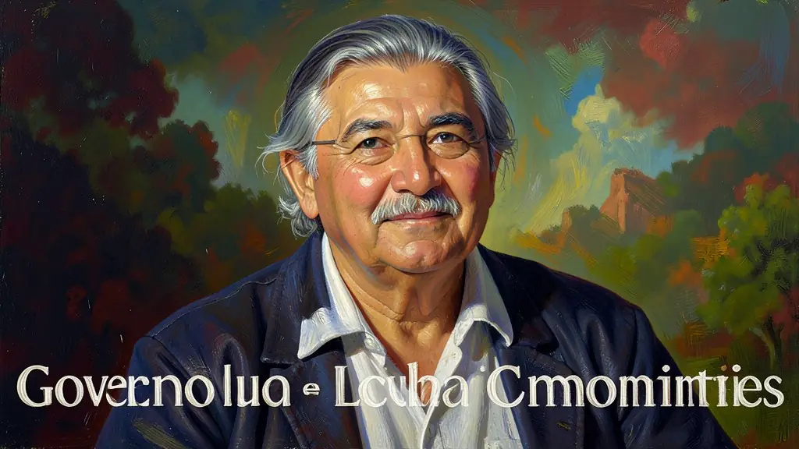
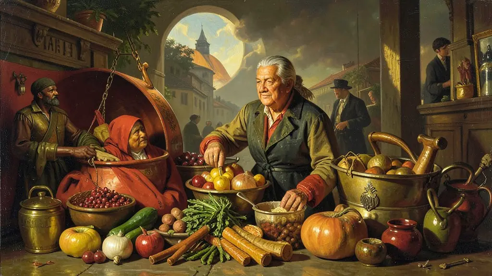
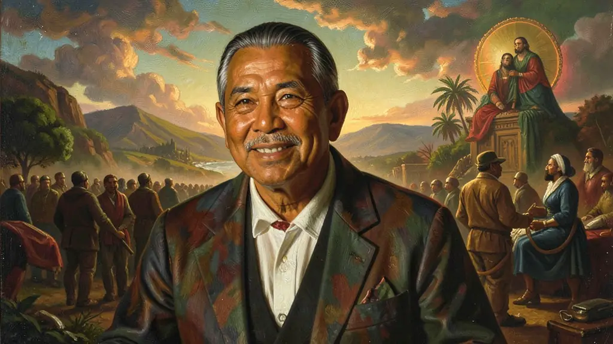

Capítulo 01
1. Bolsa Família: O Fim do Mapa da Fome
A unificação dos programas sociais sob o nome de Bolsa Família permitiu que famílias de todo o Brasil tivessem uma renda mínima mensal. Mais do que dar o dinheiro, o Estado passou a exigir que os filhos estivessem na escola e vacinados. Isso gerou um boom de consumo no interior e uma melhora drástica nos indicadores de desnutrição infantil. O 'Pai dos Pobres' do século XXI trocou o assistencialismo pela cidadania obrigatória condicionada por lei.

Capítulo 02
2. China e Commodities: O Brasil Agrário de Luxo
O Brasil de Lula surfou na onda chinesa. Pequim precisava de minério e comida para crescer, e o Brasil tinha de sobra. Isso trouxe bilhões de dólares para o país, gerando superávits comerciais recordes. Porém, essa riqueza gerou um efeito colateral: o país passou a depender demais da exportação de matérias-primas e deixou de investir pesadamente na indústria de alta tecnologia nacional, a chamada 'desindustrialização precoce'.

Capítulo 03
3. Do ProUni ao Pré-sal: O Sonho Grande
Com o ProUni, o governo trocou isenção de impostos para faculdades privadas por bolsas de estudo para negros e alunos de escola pública. A universidade, antes luxo de poucos, tornou-se realidade para milhões. Ao mesmo tempo, a descoberta do Pré-sal foi vendida como o 'bilhete de loteria' do Brasil, uma reserva profunda de petróleo que garantiria verbas para educação e saúde por décadas, tornando o país um dos grandes produtores de energia do planeta.

Capítulo 04
4. Política Externa Sul-Sul: O Brasil no G20
Lula não queria apenas olhar para os EUA e para a Europa. Ele abriu embaixadas na África e no Oriente Médio. O Brasil tornou-se um líder natural dos países em desenvolvimento, liderando a missão de paz da ONU no Haiti e fundando os BRICS para bater de frente com o domínio do G7. O brasileiro passou a sentir orgulho de ser 'respeitado lá fora', mas os críticos diziam que essa política era cara demais e ideológica demais.
Capítulo 05
5. O Mensalão e o Custo da Governabilidade
A imagem do 'Governo Ético' do PT sofreu o primeiro grande baque em 2005. O Mensalão revelou que o governo de Lula pagava uma mesada a deputados para votarem em seus projetos. Líderes históricos foram presos e o país viu as entranhas da velha política funcionando dentro da nova. Lula sobreviveu ao escândalo e foi reeleito, mas a mancha da corrupção institucionalizada passaria a ser o tema central da política brasileira nos anos 2010.
O governo de Luiz Inácio Lula da Silva (2003-2010) foi marcado pela manutenção da estabilidade macroeconômica herdada de FHC, aliada a uma forte política de inclusão social e expansão do mercado interno. Através da unificação de programas sociais no 'Bolsa Família', o governo conseguiu retirar milhões de brasileiros da extrema pobreza e promover a mobilidade social. Esse período coincidiu com o 'boom' das commodities globais, o que permitiu ao Brasil acumular reservas internacionais e quitar antecipadamente a dívida com o FMI.
Externamente, o governo Lula adotou uma 'política externa ativa e altiva', buscando a integração sul-americana (Mercosul e Unasul) e o fortalecimento de elos com países do Sul Global (BRICS). Internamente, no entanto, o governo enfrentou graves crises políticas, sendo o 'Mensalão' em 2005 o episódio mais crítico, revelando sistemas de corrupção e compra de apoio parlamentar. Apesar disso, a popularidade recorde ao final do mandato deveu-se ao crescimento do consumo, ao aumento real do salário mínimo e à política de cotas e expansão das universidades federais.
O Enem costuma cobrar as políticas sociais e a mudança no papel geopolítico do Brasil durante a era Lula. É fundamental analisar como o governo conciliou os interesses do agronegócio exportador com programas de agricultura familiar e conservação ambiental. A compreensão desse período é chave para interpretar as transformações na estrutura de classes do Brasil e os desafios de sustentabilidade de um modelo de crescimento baseado prioritariamente no consumo doméstico e na exportação de recursos naturais.
Fonte: FAUSTO, Boris. História do Brasil. São Paulo: EDUSP, 2013.
Atividades interativas
Questões para fixar
O programa social conhecido como Bolsa Família, consolidado no governo Lula, diferenciava-se de outros auxílios por exigir 'condicionalidades'. Entre elas, destacam-se:
A descoberta do Pré-sal em 2007 representou um marco estratégico para o governo brasileiro por qual motivo principal?